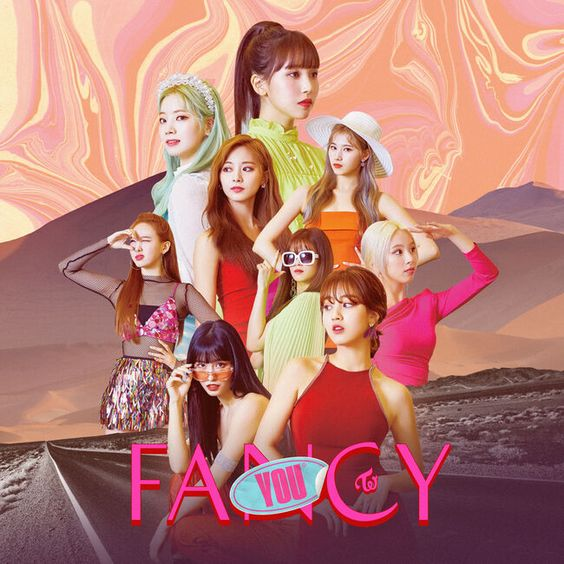
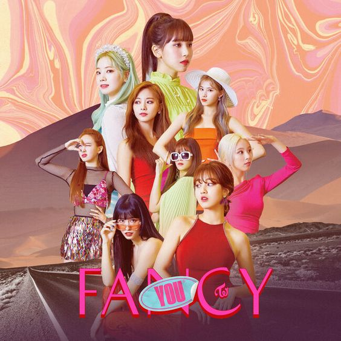

Welcome To Twice Special Website

Twice (Hangul: 트와이스; Jepang: トゥワイス), adalah sebuah grup idola wanita asal Korea Selatan yang dibentuk oleh JYP Entertainment. Grup ini terdiri dari sembilan anggota: Nayeon, Jeongyeon, Momo, Sana, Jihyo, Mina, Dahyun, Chaeyoung, dan Tzuyu. Twice dibentuk melalui sebuah program televisi berjudul Sixteen, dan melakukan debut mereka pada tanggal 20 Oktober 2015 dengan album mini bertajuk The Story Begins.
Twice meraih ketenaran pada tahun 2016 dengan lagu "Cheer Up" yang memuncaki peringkat pertama pada Gaon Digital Chart, dan menjadi singel terlaris pada tahun tersebut, dan memenangkan "Song of the Year" pada acara penghargaan Melon Music Awards dan Mnet Asian Music Awards.nLagu mereka yang berikutnya, "TT", dari album mini ketiga bertajuk Twicecoaster: Lane 1, memuncaki tangga musik Gaon selama empat minggu berturut-turut. Album mini tersebut merupakan album grup idola wanita K-pop terlaris untuk tahun 2016. Dalam kurun waktu 19 bulan setelah debut, Twice telah menjual lebih dari 1,2 juta kopi dari empat album mini dan satu album spesial mereka. Pada tahun 2019, mereka menjadi grup idola wanita Korea terlaris sepanjang sejarah.Per bulan Juli 2020,grup ini telah menjual lebih dari 9 juta album di Korea Selatan dan Jepang . Pada tahun 2020, Twice menandatangani kontrak bersama Republic Records untuk kepentingan promosi di Amerika Serikat-sebagai bagian dari kerja sama mereka dengan JYP Entertainment.


 


Nayeon
Jeongyeon
Momo
Sana
Jihyo
Mina
Dahyun
Chaeyoung
Tzuyu